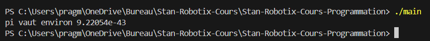
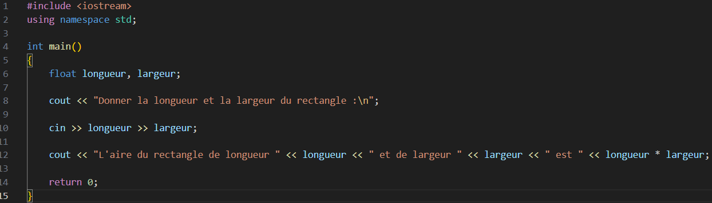

<!DOCTYPE html>
<html lang="en">
  <head>
    <meta charset="utf-8" />
    <meta name="viewport" content="width=device-width, initial-scale=1.0, maximum-scale=1.0, user-scalable=no" />

    <title></title>
    <link rel="stylesheet" href="dist/reveal.css" />
    <link rel="stylesheet" href="dist/theme/white.css" id="theme" />
    <link rel="stylesheet" href="css/vs2015.css" />
	<link rel="stylesheet" href="css/layout.css" />
	<link rel="stylesheet" href="plugin/customcontrols/style.css">
	<link rel="stylesheet" href="plugin/chalkboard/style.css">


    <script defer src="dist/fontawesome/all.min.js"></script>

	<script type="text/javascript">
		var forgetPop = true;
		function onPopState(event) {
			if(forgetPop){
				forgetPop = false;
			} else {
				parent.postMessage(event.target.location.href, "app://obsidian.md");
			}
        }
		window.onpopstate = onPopState;
		window.onmessage = event => {
			if(event.data == "reload"){
				window.document.location.reload();
			}
			forgetPop = true;
		}

		function fitElements(){
			const itemsToFit = document.getElementsByClassName('fitText');
			for (const item in itemsToFit) {
				if (Object.hasOwnProperty.call(itemsToFit, item)) {
					var element = itemsToFit[item];
					fitElement(element,1, 1000);
					element.classList.remove('fitText');
				}
			}
		}

		function fitElement(element, start, end){

			let size = (end + start) / 2;
			element.style.fontSize = `${size}px`;

			if(Math.abs(start - end) < 1){
				while(element.scrollHeight > element.offsetHeight){
					size--;
					element.style.fontSize = `${size}px`;
				}
				return;
			}

			if(element.scrollHeight > element.offsetHeight){
				fitElement(element, start, size);
			} else {
				fitElement(element, size, end);
			}		
		}


		document.onreadystatechange = () => {
			fitElements();
			if (document.readyState === 'complete') {
				if (window.location.href.indexOf("?export") != -1){
					parent.postMessage(event.target.location.href, "app://obsidian.md");
				}
				if (window.location.href.indexOf("print-pdf") != -1){
					let stateCheck = setInterval(() => {
						clearInterval(stateCheck);
						window.print();
					}, 250);
				}
			}
	};


        </script>
  </head>
  <body>
    <div class="reveal">
      <div class="slides"><section  data-markdown><script type="text/template"><!-- .slide: class="drop" -->
<div class="" style="position: absolute; left: 0px; top: 0px; height: 700px; width: 960px; min-height: 700px; display: flex; flex-direction: column; align-items: center; justify-content: center" absolute="true">

# Séance 1
## Syntaxe, variables, opérateurs, commentaires
</div></script></section><section  data-markdown><script type="text/template"><!-- .slide: class="drop" -->
<div class="" style="position: absolute; left: 0px; top: 0px; height: 700px; width: 960px; min-height: 700px; display: flex; flex-direction: column; align-items: center; justify-content: center" absolute="true">

## C'est quoi un programme ?

> Un fichier contenant une liste d'instructions à exécuter, compréhensible pour un humain

> Extension .cpp pour coder en C++
</div></script></section><section  data-markdown><script type="text/template"><!-- .slide: class="drop" -->
<div class="" style="position: absolute; left: 0px; top: 0px; height: 700px; width: 960px; min-height: 700px; display: flex; flex-direction: column; align-items: center; justify-content: center" absolute="true">

## Comment exécuter un programme ?

> Avec un compilateur


</div></script></section><section  data-markdown><script type="text/template"><!-- .slide: class="drop" -->
<div class="" style="position: absolute; left: 0px; top: 0px; height: 700px; width: 960px; min-height: 700px; display: flex; flex-direction: column; align-items: center; justify-content: center" absolute="true">

## Plusieurs types de compilateurs
**Hors-ligne**
<br>*Exemple : gcc*<br>

**En-ligne**<br>
*Exemple : replit.com*

</div></script></section><section  data-markdown><script type="text/template"><!-- .slide: class="drop" -->
<div class="" style="position: absolute; left: 0px; top: 0px; height: 700px; width: 960px; min-height: 700px; display: flex; flex-direction: column; align-items: center; justify-content: center" absolute="true">

## Structure d'un programme en C++


</div></script></section><section  data-markdown><script type="text/template"><!-- .slide: class="drop" -->
<div class="" style="position: absolute; left: 0px; top: 0px; height: 700px; width: 960px; min-height: 700px; display: flex; flex-direction: column; align-items: center; justify-content: center" absolute="true">


- **En-tête** : ajoute des fichiers / instructions supplémentaires pour plus de possibilités
- **Corps** : liste d'instructions à exécuter dans le *main()*
</div></script></section><section  data-markdown><script type="text/template"><!-- .slide: style="font-size: 78%" class="drop" -->
<div class="" style="position: absolute; left: 0px; top: 0px; height: 700px; width: 960px; min-height: 700px; display: flex; flex-direction: column; align-items: center; justify-content: center" absolute="true">

## Les blocs


- Contenu délimité par des accolades { et }
- Ce qui est dans un bloc est inaccessible à l'extérieur

</div></script></section><section  data-markdown><script type="text/template"><!-- .slide: style="font-size: 78%" class="drop" -->
<div class="" style="position: absolute; left: 0px; top: 0px; height: 700px; width: 960px; min-height: 700px; display: flex; flex-direction: column; align-items: center; justify-content: center" absolute="true">

## Les délimiteurs


- Les points-virgules ; et accolades { } servent à délimiter les lignes
- Les points-virgules sont obligatoires à chaque ligne sauf
	- Les lignes précédées d'un croisillon #
	- Les lignes précédant un bloc
	- Les lignes vides

</div></script></section><section  data-markdown><script type="text/template"><!-- .slide: style="font-size: 78%" class="drop" -->
<div class="" style="position: absolute; left: 0px; top: 0px; height: 700px; width: 960px; min-height: 700px; display: flex; flex-direction: column; align-items: center; justify-content: center" absolute="true">

## Exécution du programme


Le programme s'exécute dans la **console** et affiche le message « Hello World! »

<div class="callout callout-color1">
<div class="callout-title">
<div class="callout-icon">
<i class="fas fa-info-circle" ></i>
</div>
<div class="callout-title-inner">
Console
</div>
</div>
<div class="callout-content">
Interface graphique minimaliste pour interagir avec un programme
</div>
</div>

</div></script></section><section  data-markdown><script type="text/template"><!-- .slide: class="drop" -->
<div class="" style="position: absolute; left: 0px; top: 0px; height: 700px; width: 960px; min-height: 700px; display: flex; flex-direction: column; align-items: center; justify-content: center" absolute="true">

En changeant la chaîne de caractères, on peut changer le message affiché<br>

</div></script></section><section  data-markdown><script type="text/template"><!-- .slide: class="drop" -->
<div class="" style="position: absolute; left: 0px; top: 0px; height: 700px; width: 960px; min-height: 700px; display: flex; flex-direction: column; align-items: center; justify-content: center" absolute="true">


<div class="callout callout-color1">
<div class="callout-title">
<div class="callout-icon">
<i class="fas fa-info-circle" ></i>
</div>
<div class="callout-title-inner">
Chaîne de caractères
</div>
</div>
<div class="callout-content">
Texte entre guillemets anglais "" pouvant être affiché dans la console
</div>
</div>

</div></script></section><section  data-markdown><script type="text/template"><!-- .slide: style="font-size: 80%" class="drop" -->
<div class="" style="position: absolute; left: 0px; top: 0px; height: 700px; width: 960px; min-height: 700px; display: flex; flex-direction: column; align-items: center; justify-content: center" absolute="true">

## Comment afficher quelque chose d'arbitraire ?

- Utiliser l'instruction *cout*
- Enchaîner les valeurs avec deux chevrons <<
	- Valeurs admissibles : chaînes de caractères, nombres entiers, nombres décimaux


</div></script></section><section  data-markdown><script type="text/template"><!-- .slide: style="font-size: 80%" class="drop" -->
<div class="" style="position: absolute; left: 0px; top: 0px; height: 700px; width: 960px; min-height: 700px; display: flex; flex-direction: column; align-items: center; justify-content: center" absolute="true">

## Que fait ce programme ?


</div></script></section><section  data-markdown><script type="text/template"><!-- .slide: style="font-size: 80%" class="drop" -->
<div class="" style="position: absolute; left: 0px; top: 0px; height: 700px; width: 960px; min-height: 700px; display: flex; flex-direction: column; align-items: center; justify-content: center" absolute="true">

## Solution : 


Il affiche « Mon nombre préféré est 235.238 » dans la console

</div></script></section><section  data-markdown><script type="text/template"><!-- .slide: style="font-size: 80%" class="drop" -->
<div class="" style="position: absolute; left: 0px; top: 0px; height: 700px; width: 960px; min-height: 700px; display: flex; flex-direction: column; align-items: center; justify-content: center" absolute="true">


## Un peu de vocabulaire... déclaration VS définition

<div class="callout callout-color1">
<div class="callout-title">
<div class="callout-icon">
<i class="fas fa-info-circle" ></i>
</div>
<div class="callout-title-inner">
Déclaration
</div>
</div>
<div class="callout-content">
Action de préciser l'existence de quelque chose dans le programme, sans donner de valeur ou de comportement voulu
</div>
</div>
<div class="callout callout-color1">
<div class="callout-title">
<div class="callout-icon">
<i class="fas fa-info-circle" ></i>
</div>
<div class="callout-title-inner">
Définition
</div>
</div>
<div class="callout-content">
Action de déclarer en précisant la valeur ou le comportement de ladite chose dans le programme
</div>
</div>
</div></script></section><section  data-markdown><script type="text/template"><!-- .slide: class="drop" -->
<div class="" style="position: absolute; left: 0px; top: 0px; height: 700px; width: 960px; min-height: 700px; display: flex; flex-direction: column; align-items: center; justify-content: center" absolute="true">

## Les variables

- Stocker des données pour les utiliser ailleurs
- Différents types possibles
	- **int** : nombres entiers
	- **float** (et **double**) : nombres décimaux (avec plus de précision)
	- **bool** : *true* (vrai, 1) et *false* (faux, 0) logiques / binaire
	- **string** : chaîne de caractères (voir l'exercice 7.8)
	- À venir...

</div></script></section><section  data-markdown><script type="text/template"><!-- .slide: class="drop" -->
<div class="" style="position: absolute; left: 0px; top: 0px; height: 700px; width: 960px; min-height: 700px; display: flex; flex-direction: column; align-items: center; justify-content: center" absolute="true">

#### Déclaration d'une variable
```cpp
type nom;
```
#### Définition d'une variable
```cpp
type nom = valeur;
```
Une variable se comporte comme une **valeur**. On peut donc l'afficher avec l'instruction *cout*
</div></script></section><section  data-markdown><script type="text/template"><!-- .slide: style="font-size: 80%" class="drop" -->
<div class="" style="position: absolute; left: 0px; top: 0px; height: 700px; width: 960px; min-height: 700px; display: flex; flex-direction: column; align-items: center; justify-content: center" absolute="true">
<div class="callout callout-color1">
<div class="callout-title">
<div class="callout-icon">
<i class="fas fa-clipboard-list" ></i>
</div>
<div class="callout-title-inner">
Opérateur d'affectation
</div>
</div>
<div class="callout-content">
L'opérateur « = » n'est pas l'opérateur pour l'égalité logique mais c'est un opérateur pour <b>affecter</b> une valeur à une variable
</div>
</div>
	<div class="callout callout-color1">
<div class="callout-title">
<div class="callout-icon">
<i class="fas fa-clipboard-list" ></i>
</div>
<div class="callout-title-inner">
Donnée constante
</div>
</div>
<div class="callout-content">
Pour stocker une donnée constante (qui ne doit pas pouvoir être modifiée), on peut ajouter au début de la déclaration de la variable de mot-clé const
</div>
</div>

</div></script></section><section  data-markdown><script type="text/template"><!-- .slide: style="font-size: 70%" class="drop" -->
<div class="" style="position: absolute; left: 0px; top: 0px; height: 700px; width: 960px; min-height: 700px; display: flex; flex-direction: column; align-items: center; justify-content: center" absolute="true">

 <div style="">
  <div style="float: left;  width: 35%;  padding: 5px;">
    
  </div>
  <div style="float: left;  width: 62%;  padding: 5px; margin-top:85px">
    
  </div>
</div> 
<div class="callout callout-color1">
<div class="callout-title">
<div class="callout-icon">
<i class="fas fa-clipboard-list" ></i>
</div>
<div class="callout-title-inner">
Variable non définie
</div>
</div>
<div class="callout-content">
Utiliser une variable non définie (par exemple dans un affichage) créer un comportement non voulu
</div>
</div>


</div></script></section><section  data-markdown><script type="text/template"><!-- .slide: style="font-size: 70%" class="drop" -->
<div class="" style="position: absolute; left: 0px; top: 0px; height: 700px; width: 960px; min-height: 700px; display: flex; flex-direction: column; align-items: center; justify-content: center" absolute="true">

<div class="callout callout-color1">
<div class="callout-title">
<div class="callout-icon">
<i class="fas fa-clipboard-list" ></i>
</div>
<div class="callout-title-inner">
Enchaîner les déclarations
</div>
</div>
<div class="callout-content">
On peut déclarer plusieurs variables du même type en séparant les noms par des virgules
</div>
</div>


</div></script></section><section  data-markdown><script type="text/template"><!-- .slide: style="font-size: 70%" class="drop" -->
<div class="" style="position: absolute; left: 0px; top: 0px; height: 700px; width: 960px; min-height: 700px; display: flex; flex-direction: column; align-items: center; justify-content: center" absolute="true">

## Que fait ce programme ?


</div></script></section><section  data-markdown><script type="text/template"><!-- .slide: style="font-size: 80%" class="drop" -->
<div class="" style="position: absolute; left: 0px; top: 0px; height: 700px; width: 960px; min-height: 700px; display: flex; flex-direction: column; align-items: center; justify-content: center" absolute="true">

## Solution


Il affiche « L'épisode 2 de la saison 8 dure 23.6 minutes » dans la console

</div></script></section><section  data-markdown><script type="text/template"><!-- .slide: style="font-size: 80%" class="drop" -->
<div class="" style="position: absolute; left: 0px; top: 0px; height: 700px; width: 960px; min-height: 700px; display: flex; flex-direction: column; align-items: center; justify-content: center" absolute="true">


## Donner une valeur lors de l'exécution

- Déclarer une variable pour stocker la valeur
- Utiliser l'instruction *cin*
- Enchaîner les variables avec >>
	- Valeurs admissibles : dépend du type de variable

> Lorsque l'instruction cin est exécutée, le programme se fige : il faut taper la valeur avec le clavier et la valider avec la touche ENTRÉE

</div></script></section><section  data-markdown><script type="text/template"><!-- .slide: style="font-size: 84%" class="drop" -->
<div class="" style="position: absolute; left: 0px; top: 0px; height: 700px; width: 960px; min-height: 700px; display: flex; flex-direction: column; align-items: center; justify-content: center" absolute="true">


</div></script></section><section  data-markdown><script type="text/template"><!-- .slide: style="font-size: 60%; margin: 0" class="drop" -->
<div class="" style="position: absolute; left: 0px; top: 0px; height: 700px; width: 960px; min-height: 700px; display: flex; flex-direction: column; align-items: center; justify-content: center" absolute="true">

<div class="callout callout-color1">
<div class="callout-title">
<div class="callout-icon">
<i class="fas fa-clipboard-list" ></i>
</div>
<div class="callout-title-inner">
Afficher un retour à la ligne
</div>
</div>
<div class="callout-content">
Pour afficher un retour à la ligne, on utilise le caractère « \n » à la fin d'une chaîne de caractère, ou on enchaîne avec « << endl »
</div>
</div>

</div></script></section><section  data-markdown><script type="text/template"><!-- .slide: style="font-size: 60%; margin: 0" class="drop" -->
<div class="" style="position: absolute; left: 0px; top: 0px; height: 700px; width: 960px; min-height: 700px; display: flex; flex-direction: column; align-items: center; justify-content: center" absolute="true">

## Opérateurs et opérations sur les variables

| **Opérateur**  | **Signification** | **Commentaire**                                          |
| -------------- | ----------------- | ---------------------------------------------------- |
| +              | Addition            |                                                                                                |
| -              | Soustraction        |                                                                                                |
| *              | Multiplication      |                                                                                                |
| a / b          | Division de a par b | Quotient de la division euclidienne si un des opérandes est de type int, valeur décimale sinon |
| a % b          | Modulo              | Reste de la division euclidienne de a par b (ne fonctionne qu'avec des opérandes de type int)             |
| =              | Affectation         |                                                                                                |

> Un opérande est ce sur quoi agit un opérateur

</div></script></section><section  data-markdown><script type="text/template"><!-- .slide: class="drop" -->
<div class="" style="position: absolute; left: 0px; top: 0px; height: 700px; width: 960px; min-height: 700px; display: flex; flex-direction: column; align-items: center; justify-content: center" absolute="true">




</div></script></section><section  data-markdown><script type="text/template"><!-- .slide: style="font-size: 70%" class="drop" -->
<div class="" style="position: absolute; left: 0px; top: 0px; height: 700px; width: 960px; min-height: 700px; display: flex; flex-direction: column; align-items: center; justify-content: center" absolute="true">

<div class="callout callout-color1">
<div class="callout-title">
<div class="callout-icon">
<i class="fas fa-clipboard-list" ></i>
</div>
<div class="callout-title-inner">
Attention
</div>
</div>
<div class="callout-content">
Un opérateur calcule une valeur de retour mais de modifie pas les opérandes
</div>
</div>


La ligne 12 calcule le résultat de 2 * largeur / 5.2 + 1, mais ne fait rien avec.

</div></script></section><section  data-markdown><script type="text/template"><!-- .slide: style="font-size: 75%" class="drop" -->
<div class="" style="position: absolute; left: 0px; top: 0px; height: 700px; width: 960px; min-height: 700px; display: flex; flex-direction: column; align-items: center; justify-content: center" absolute="true">

## Écrivez un programme conduisant à cet affichage


</div></script></section><section  data-markdown><script type="text/template"><!-- .slide: style="font-size: 75%" class="drop" -->
<div class="" style="position: absolute; left: 0px; top: 0px; height: 700px; width: 960px; min-height: 700px; display: flex; flex-direction: column; align-items: center; justify-content: center" absolute="true">

## Solution


</div></script></section><section  data-markdown><script type="text/template"><!-- .slide: style="font-size: 75%" class="drop" -->
<div class="" style="position: absolute; left: 0px; top: 0px; height: 700px; width: 960px; min-height: 700px; display: flex; flex-direction: column; align-items: center; justify-content: center" absolute="true">


## Opérateurs modifiant une variable

| **Opérateur**  | **Signification** | **Commentaire**                                          |
| -------------- | ----------------- | -------------------------------------------------------- |
| a += b         | a = a + b         |                                                                                                |
| a -= b         | a = a - b         |                                                                                                |
| a *= b         | a = a * b         |                                                                                                |
| a /= b         | a = a / b         |  |
| a %= b         | a = a % b         |              |
| a++            | a = a + 1         | L'action est l'incrémentation             |
| a--            | a = a - 1         | L'action est la décrémentation             |
</div></script></section><section  data-markdown><script type="text/template"><!-- .slide: class="drop" -->
<div class="" style="position: absolute; left: 0px; top: 0px; height: 700px; width: 960px; min-height: 700px; display: flex; flex-direction: column; align-items: center; justify-content: center" absolute="true">


</div></script></section><section  data-markdown><script type="text/template"><!-- .slide: class="drop" -->
<div class="" style="position: absolute; left: 0px; top: 0px; height: 700px; width: 960px; min-height: 700px; display: flex; flex-direction: column; align-items: center; justify-content: center" absolute="true">

## Conversion de types
- La conversion renvoie une **valeur**
- Utile pour s'assurer qu'une valeur est du bon type
- Utiliser la bonne division (euclidienne ou décimale)
- Utiliser le modulo % (ne fonctionne qu'avec des int)

Préciser le type de conversion puis entre parenthèse la valeur ou variable à convertir

</div></script></section><section  data-markdown><script type="text/template"><!-- .slide: style="font-size: 85%" class="drop" -->
<div class="" style="position: absolute; left: 0px; top: 0px; height: 700px; width: 960px; min-height: 700px; display: flex; flex-direction: column; align-items: center; justify-content: center" absolute="true">


</div></script></section><section  data-markdown><script type="text/template"><!-- .slide: style="font-size: 70%" class="drop" -->
<div class="" style="position: absolute; left: 0px; top: 0px; height: 700px; width: 960px; min-height: 700px; display: flex; flex-direction: column; align-items: center; justify-content: center" absolute="true">

### Précision des types (1 = le plus, 4 = le moins)
| **Précision**  | **Type** |
| -------------- | ----------------- |
| 1         | double         |
| 2       | float         |
| 3         | int         |
| 4        | bool         |
<div class="callout callout-color1">
<div class="callout-title">
<div class="callout-icon">
<i class="fas fa-clipboard-list" ></i>
</div>
<div class="callout-title-inner">
Attention
</div>
</div>
<div class="callout-content">
Une conversion de type peut entraîner une perte d'information si on convertit d'un type à forte précision vers un type à faible précision
</div>
</div>

</div></script></section><section  data-markdown><script type="text/template">

## Commentaires

- Texte sans influence sur le programme
- Utile pour expliquer le fonctionnement d'une section complexe
	
<div class="callout callout-color1">
<div class="callout-title">
<div class="callout-icon">
<i class="fas fa-clipboard-list" ></i>
</div>
<div class="callout-title-inner">
Attention
</div>
</div>
<div class="callout-content">
Un bon programme a besoin de peu ou pas de commentaires
</div>
</div>

</div></script></section><section  data-markdown><script type="text/template"><!-- .slide: style="font-size: 70%" class="drop" -->
<div class="" style="position: absolute; left: 0px; top: 0px; height: 700px; width: 960px; min-height: 700px; display: flex; flex-direction: column; align-items: center; justify-content: center" absolute="true">


- Commentaire sur une ligne en la précédant de deux barres obliques //
- Commentaire multi-ligne, encadré par /* et */

</script></section></div>
    </div>

    <script src="dist/reveal.js"></script>

    <script src="plugin/markdown/markdown.js"></script>
    <script src="plugin/highlight/highlight.js"></script>
    <script src="plugin/zoom/zoom.js"></script>
    <script src="plugin/notes/notes.js"></script>
    <script src="plugin/math/math.js"></script>
	<script src="plugin/mermaid/mermaid.js"></script>
	<script src="plugin/chart/chart.min.js"></script>
	<script src="plugin/chart/plugin.js"></script>
	<script src="plugin/customcontrols/plugin.js"></script>
	<script src="plugin/chalkboard/plugin.js"></script>

    <script>
      function extend() {
        var target = {};
        for (var i = 0; i < arguments.length; i++) {
          var source = arguments[i];
          for (var key in source) {
            if (source.hasOwnProperty(key)) {
              target[key] = source[key];
            }
          }
        }
        return target;
      }

	  function isLight(color) {
		let hex = color.replace('#', '');

		// convert #fff => #ffffff
		if(hex.length == 3){
			hex = `${hex[0]}${hex[0]}${hex[1]}${hex[1]}${hex[2]}${hex[2]}`;
		}

		const c_r = parseInt(hex.substr(0, 2), 16);
		const c_g = parseInt(hex.substr(2, 2), 16);
		const c_b = parseInt(hex.substr(4, 2), 16);
		const brightness = ((c_r * 299) + (c_g * 587) + (c_b * 114)) / 1000;
		return brightness > 155;
	}

	var bgColor = getComputedStyle(document.documentElement).getPropertyValue('--r-background-color').trim();
	var isLight = isLight(bgColor);

	if(isLight){
		document.body.classList.add('has-light-background');
	} else {
		document.body.classList.add('has-dark-background');
	}

      // default options to init reveal.js
      var defaultOptions = {
        controls: true,
        progress: true,
        history: true,
        center: true,
        transition: 'default', // none/fade/slide/convex/concave/zoom
        plugins: [
          RevealMarkdown,
          RevealHighlight,
          RevealZoom,
          RevealNotes,
          RevealMath.MathJax3,
		  RevealMermaid,
		  RevealChart,
		  RevealCustomControls,
		  RevealChalkboard, 
        ],


    	allottedTime: 120 * 1000,

		mathjax3: {
			mathjax: 'plugin/math/mathjax/tex-mml-chtml.js',
		},
		markdown: {
		  gfm: true,
		  mangle: true,
		  pedantic: false,
		  smartLists: false,
		  smartypants: false,
		},

		mermaid: {
			theme: isLight ? 'default' : 'dark',
		},

		customcontrols: {
			controls: [
				{id: 'toggle-overview',
				title: 'Toggle overview (O)',
				icon: '<i class="fa fa-th"></i>',
				action: 'Reveal.toggleOverview();'
				},
				{ icon: '<i class="fa fa-pen-square"></i>',
				title: 'Toggle chalkboard (B)',
				action: 'RevealChalkboard.toggleChalkboard();'
				},
				{ icon: '<i class="fa fa-pen"></i>',
				title: 'Toggle notes canvas (C)',
				action: 'RevealChalkboard.toggleNotesCanvas();'
				},
				{ icon: '<i class="fa fa-home" onclick = "window.location.href = \'../index.html\';"></i>',
				title: 'Page d\'accueil',
				action: ''
				},
			]
		},
      };

      // options from URL query string
      var queryOptions = Reveal().getQueryHash() || {};

      var options = extend(defaultOptions, {"width":960,"height":700,"margin":0.04,"controls":true,"progress":true,"slideNumber":false,"transition":"slide","transitionSpeed":"normal"}, queryOptions);
    </script>

    <script>
      Reveal.initialize(options);
    </script>
  </body>

  <!-- created with Advanced Slides -->
</html>
